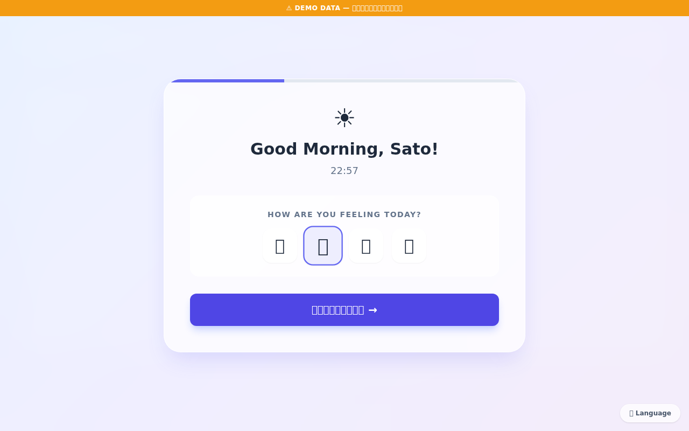
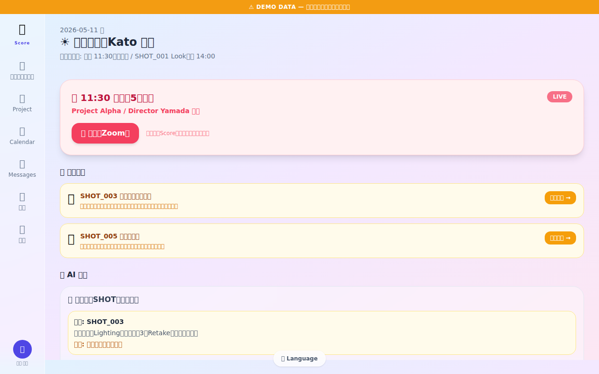
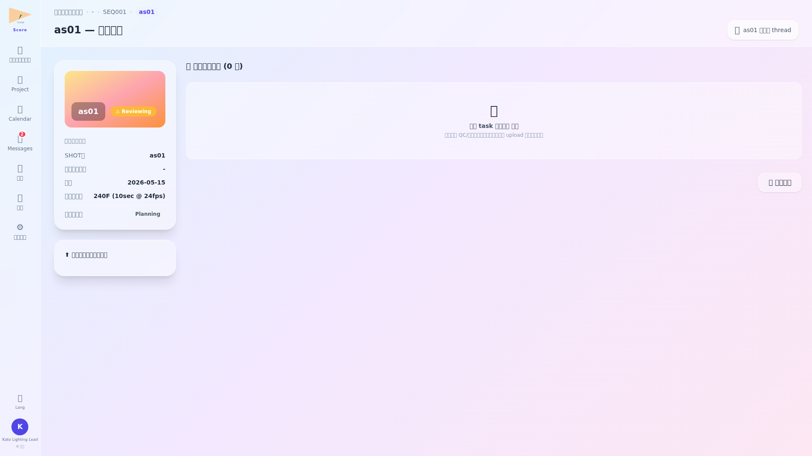
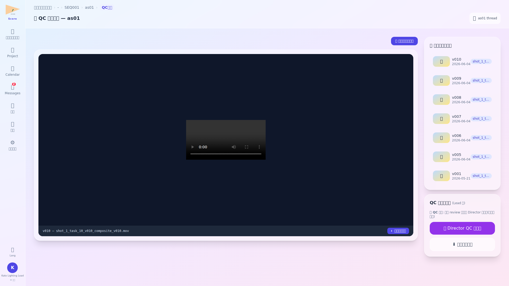
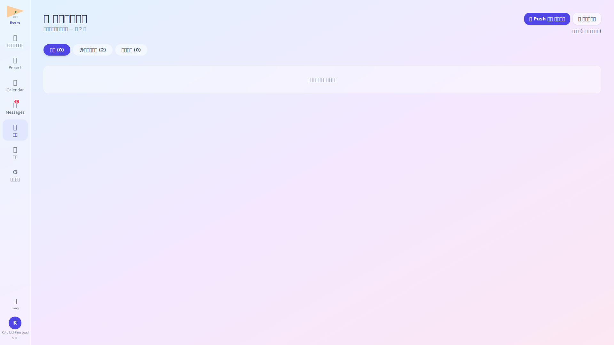
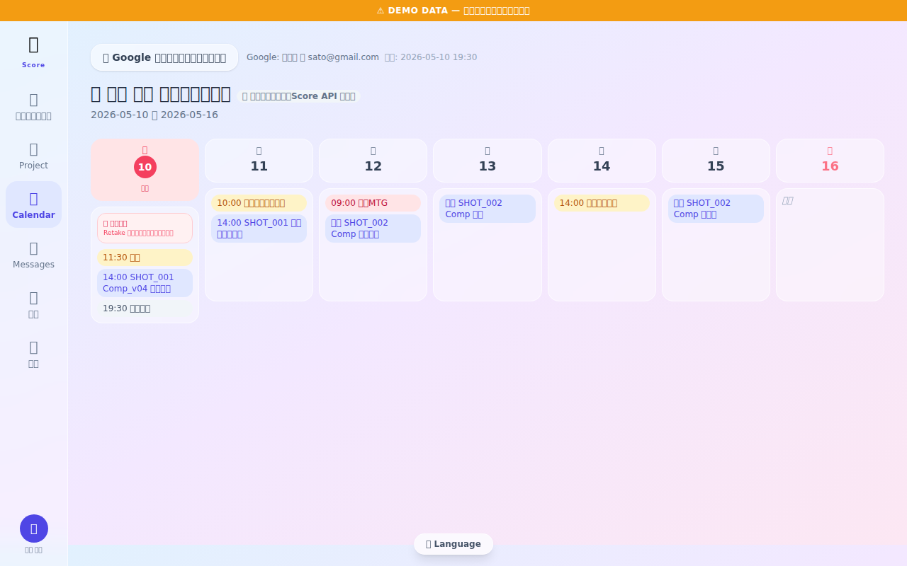
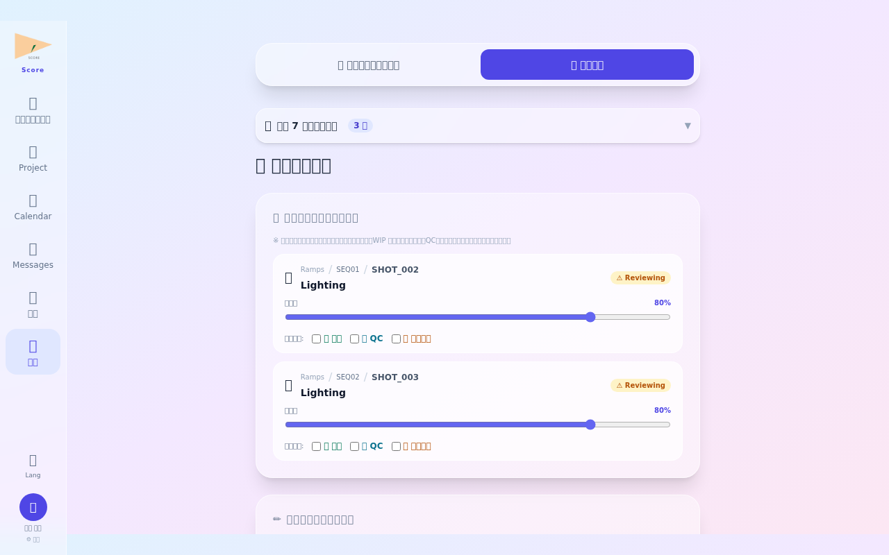
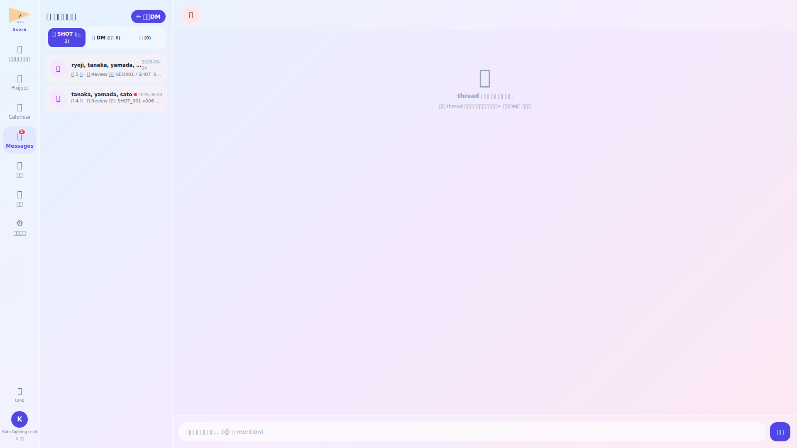
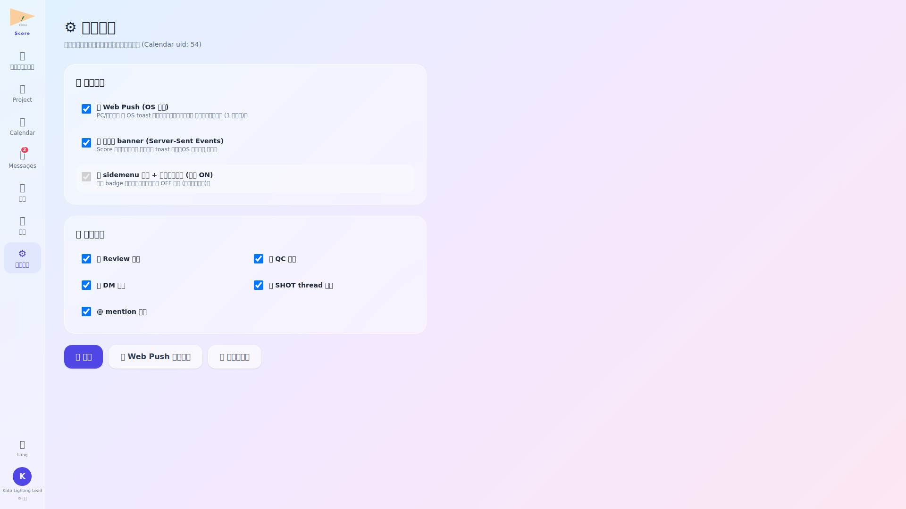

ログイン・朝のルーティン確認

ログイン後、ルーティン画面でライティング部門の本日の作業優先度を確認します。担当ショットの締め切りや、Director からのリテイク指示が新着で表示されます。
- 緊急リテイクは赤バッジで上部固定表示
- チームメンバーの本日稼働状況がルーティン画面で確認できる
Lead ダッシュボード確認

Lead ダッシュボードではライティング部門全体の稼働状況を確認します。担当ショット総数・完了数・QC 待ち数・メンバー別の作業量が一覧で把握できます。リソース配分の調整判断に活用します。
- メンバー別の作業量をバーチャートで比較表示
- 過負荷メンバーへのアサインを他メンバーに移管する操作もここから可能
ショット詳細確認

ショット詳細画面では工程・QC ステータス・担当者・コメント履歴に加え、提出された Review/QC 依頼が 階層 title (project / SEQ / SHOT / task) で表示。本文中の ▶ QC ビューアで確認 緑ボタンを click すると Before/After QC 画面 (qc/{shot_id}) へ即遷移。提出物アセットには版数とアップロード履歴がリンク。
- バージョン履歴から過去の作業状態を参照可能
- コメントタブで Director・PM とのコミュニケーション履歴を確認
QC レビュー実施

QC ビューアでは提出された各バージョンを Before / After で並列比較。中央の ドラッグ可能な仕切り線 で 2 つの asset を 1 画面比較できる。画面上部に project/seq/shot/task の階層 title 表示、サイドバーで全 version 履歴とサムネール一覧 + click 切替。
- 「部門 QC 通過」とするとショットが Director QC キューに移動
- 部門内リテイクの場合はコメントを入力してメンバーに差し戻し
通知センター確認

通知センターでは未読/既読の管理、@ メンション通知、システムからのお知らせを確認。画面右上の 📣 Push 通知を有効化 ボタンで OS レベル通知を 1 click 取得、🧪 テスト送信で動作確認可。Calendar の DM thread が 🎬 SHOT 関係者 (3+名) と 💬 1対1 DM (2名) に区分表示される。
- 通知タイプ (リテイク / 承認 / コメント / システム) でフィルタ可能
- 通知クリックで関連ショットや画面へ直接ジャンプ
カレンダー・チームスケジュール確認

カレンダーでライティング部門のスケジュールを確認します。ショット締め切り・試写・チームミーティングの日程を把握し、翌日以降の作業割り当てを計画します。
- チームメンバーの稼働日・休暇日がカラーコードで表示
- ショット締め切り日に連動した自動リマインダー設定が可能
退勤報告

退勤前に部門の本日の QC 完了件数・リテイク件数・翌日の優先ショットを退勤報告にまとめます。チームメンバー全員の退勤報告が揃ってから Lead が最終確認して提出します。
- メンバーの退勤報告状況が一覧で確認できる集計ビュー付き
- 未提出メンバーへのリマインド通知を一括送信可能
💬 メッセージ — SHOT 関係者 thread + 1対1 DM

Lead は各 SHOT の Look 統一を担う立場として SHOT 関係者 thread に自動含まれる。QC 依頼を画面で確認し、緑ボタンで該当 shot の QC ビューアへ即遷移して判定。
⚙️ 通知設定 — Push / SSE / 画面 badge の三重立て

Lead は QC 依頼と SHOT thread 投稿が主。Push + SSE で重要通知を確実に受信、画面 badge で後追い確認の三重立てで取りこぼし防止。